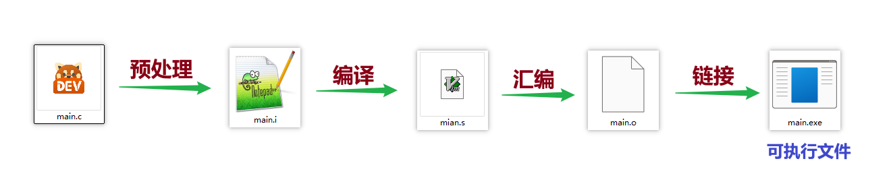
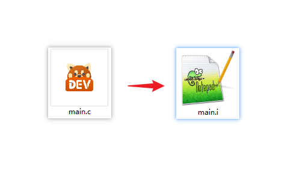
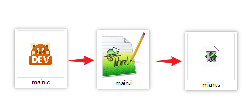
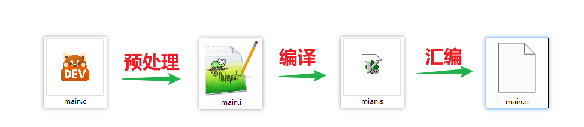

<!DOCTYPE lake>
<h1 data-lake-id="nFehA" id="nFehA"><span data-lake-id="ue0772a6b" id="ue0772a6b">程序的完整生命周期</span></h1><p data-lake-id="u7c464f71" id="u7c464f71"></p><p data-lake-id="u4e92457a" id="u4e92457a"></p><h2 data-lake-id="c0J0V" id="c0J0V"><span data-lake-id="ua2dfda16" id="ua2dfda16">Step 0&gt; 编辑.c源文件</span></h2><span class="yuque-card-unsupported">[codeblock]</span><hr/><h2 data-lake-id="inliH" id="inliH"><span data-lake-id="ua61d8b2f" id="ua61d8b2f">Step 1&gt; 预处理（Pre-processing）</span></h2><span class="yuque-card-unsupported">[codeblock]</span><p data-lake-id="u591f5432" id="u591f5432"><span data-lake-id="ue7c722c5" id="ue7c722c5">处理以</span><strong><span data-lake-id="u208ee3d7" id="u208ee3d7" style="color: #DF2A3F">#</span></strong><span data-lake-id="u4a538cb6" id="u4a538cb6">开头的预处理指令；</span></p><ul list="ub31c98f2"><li data-lake-id="u67cd0f42" fid="u75d300fe" id="u67cd0f42"><span data-lake-id="u0d18ab1e" id="u0d18ab1e">#include 指令会将头文件的内容插入到源文件中；</span></li><li data-lake-id="u3a591639" fid="u75d300fe" id="u3a591639"><span data-lake-id="u73b41930" id="u73b41930">#define指令会进行</span><strong><span data-lake-id="u3706a56a" id="u3706a56a">宏</span></strong><span data-lake-id="uc74a8f40" id="uc74a8f40">替换，如将PI替换为3.14；</span></li></ul><p data-lake-id="u9664cb24" id="u9664cb24"></p><span class="yuque-card-unsupported">[codeblock]</span><hr/><h2 data-lake-id="DmMhM" id="DmMhM"><span data-lake-id="u4482eae0" id="u4482eae0">Step 2&gt; 编译（Compilation）</span></h2><span class="yuque-card-unsupported">[codeblock]</span><p data-lake-id="u56494abc" id="u56494abc"><span data-lake-id="ued7ea4b2" id="ued7ea4b2">将预处理文件main.i 转换为 </span><strong><span data-lake-id="uc395050e" id="uc395050e" style="color: #DF2A3F">汇编</span></strong><span data-lake-id="ueeb09c06" id="ueeb09c06">文件main.s</span></p><ul list="u26b7d1a1"><li data-lake-id="u63fc4356" fid="ub1220488" id="u63fc4356"><span data-lake-id="u6d80375a" id="u6d80375a">检查语法错误，词法分析等；</span></li></ul><p data-lake-id="ufc842055" id="ufc842055"></p><p data-lake-id="u3863bc7c" id="u3863bc7c"><br/></p><span class="yuque-card-unsupported">[codeblock]</span><hr/><h2 data-lake-id="GbgVr" id="GbgVr"><span data-lake-id="ub89c49d6" id="ub89c49d6">Step 3&gt; 汇编（Assembly）</span></h2><span class="yuque-card-unsupported">[codeblock]</span><p data-lake-id="u0f3b0a96" id="u0f3b0a96"><span data-lake-id="u89edd756" id="u89edd756">将汇编语言转换为机器指令，生成目标文件，但缺少库文件的链接等；</span></p><p data-lake-id="u5dc876c6" id="u5dc876c6"></p><span class="yuque-card-unsupported">[codeblock]</span><ul list="u46afbffc"><li data-lake-id="u28335085" fid="ub25076e6" id="u28335085"><span data-lake-id="u20287859" id="u20287859">可通过反汇编工具查看</span></li></ul><h2 data-lake-id="PvUpa" id="PvUpa"><span data-lake-id="u8aa78228" id="u8aa78228">Step 4&gt; 链接（Linking）</span></h2><span class="yuque-card-unsupported">[codeblock]</span><p data-lake-id="ud4d2c73b" id="ud4d2c73b"><span data-lake-id="u42a0fbf4" id="u42a0fbf4">将目标文件和库文件（如c标准库）链接到一起，生成可执行文件</span></p><p data-lake-id="ub86c6394" id="ub86c6394"></p><p data-lake-id="ue8120cf6" id="ue8120cf6"><br/></p><h2 data-lake-id="sHr88" id="sHr88"><span data-lake-id="udd02ce8b" id="udd02ce8b">Step 5&gt; 执行（Execution）</span></h2><span class="yuque-card-unsupported">[codeblock]</span><p data-lake-id="u5ba04a78" id="u5ba04a78"><span data-lake-id="u47e102ac" id="u47e102ac">现代编译器（如 gcc）通常一键完成所有步骤，但初学者只需了解各阶段流程，重点掌握预处理命令即可。</span></p>